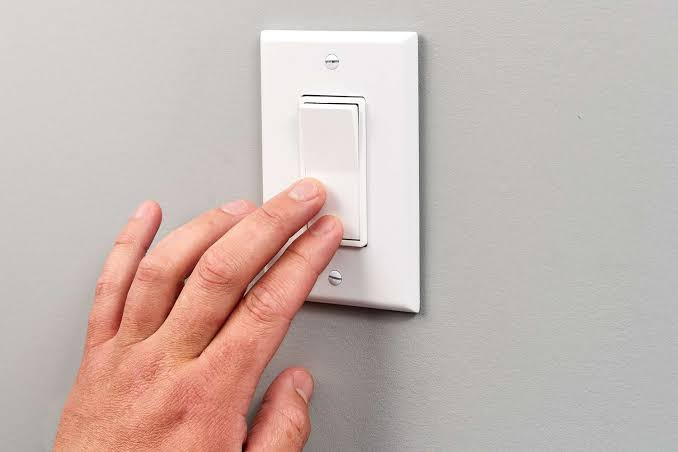
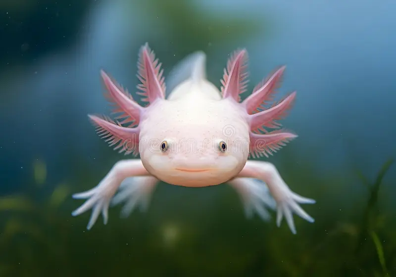
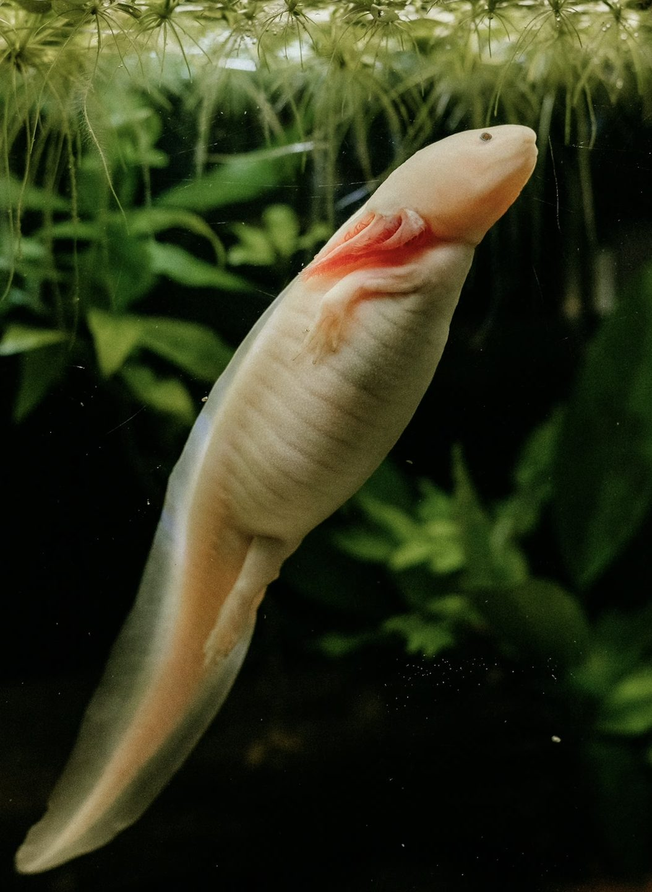

Every gene in your body needs to be "read" before it can do anything — a process called transcription, where the cell copies a gene's instructions so they can be built into a protein. But genes don't just start being read from a random point on the DNA strand. There's a specific, precise spot that marks exactly where reading should begin, called the initiator. Scientists have known this element existed for decades — they just couldn't crack what its exact DNA code looked like.
A team at the University of California San Diego, led by Professor James Kadonaga and graduate researcher Torrey Rhyne-Carrigg, took a brute-force approach to finally solve it. Instead of guessing at the pattern, they used high-throughput DNA sequencing to test roughly 500,000 different versions of the initiator sequence, measuring how active each one was at switching a gene on. They then fed all of that data into a machine-learning model and trained it to recognise exactly what makes an initiator sequence work.
Once the AI had learned the hidden pattern, the team set it loose on the human genome — and found the initiator sequence sitting in roughly 60% of all human genes. That's a huge chunk of our genetic code that scientists can now recognise and predict, where before it was essentially invisible.
Why it matters: a lot of diseases are caused by mutations that land not in a gene itself, but in the regulatory "switch" that controls it — meaning the gene's instructions are perfectly fine, but it never gets properly turned on. With the initiator's code finally decoded, researchers can start predicting exactly what a mutation in that tiny switch region will do to a gene's activity, which could help explain — and eventually treat — a wide range of genetic disorders and cancers.
A Dallas biotech company called Colossal Biosciences is trying to recreate a functional woolly mammoth — extinct for roughly 4,000 years — by comparing its full genome against its closest living relative, the Asian elephant, and using CRISPR gene-editing to insert mammoth traits like shaggy cold-resistant fur, extra fat layers, and cold-adapted blood into elephant cells.
The plan is to implant an edited embryo into an elephant surrogate, which would carry it through a 22-month pregnancy. As proof of concept, the team already created "woolly mice" — ordinary lab mice carrying spliced-in mammoth fur genes — specifically to test whether those genes actually produce cold tolerance before attempting anything in an elephant.
The original target was a mammoth calf by 2028. That's now slipped to "early 2030s." There's also real scientific debate about what the end result even is: Colossal's own chief scientist has admitted a mammoth calf would technically be a heavily gene-edited elephant carrying mammoth traits, not a literal resurrected mammoth. The ecological case, though, is bigger than nostalgia — reintroducing mammoth-like grazers to the Arctic is meant to help trample snow, keep permafrost frozen, and slow the release of greenhouse gases as tundra thaws.
Octopuses have three hearts — two pump blood to the gills, and one pumps it to the rest of the body.
Humans share about 60% of their genes with bananas.
Sharks are older than trees — they've existed for roughly 450 million years.
It takes about 10 years for your entire skeleton to fully rebuild itself.
Some snails can seal themselves inside their shell and sleep for years at a time.


Ambystoma mexicanum
A salamander that never grows up — it keeps its juvenile gills and stays aquatic for its entire life instead of developing lungs like most amphibians, a trait called neoteny.
Its most famous ability is regeneration: an axolotl can regrow an entire lost limb, complete with bone, muscle, and nerves, over the course of a few weeks — and can also regenerate parts of its heart, spinal cord, and even brain tissue with minimal scarring.
It's critically endangered in the wild, surviving naturally only in the canal system of Lake Xochimilco near Mexico City, even though it's one of the most widely studied animals in regeneration research worldwide.
Click and drag across letters to select a word. Words are pulled from this issue.